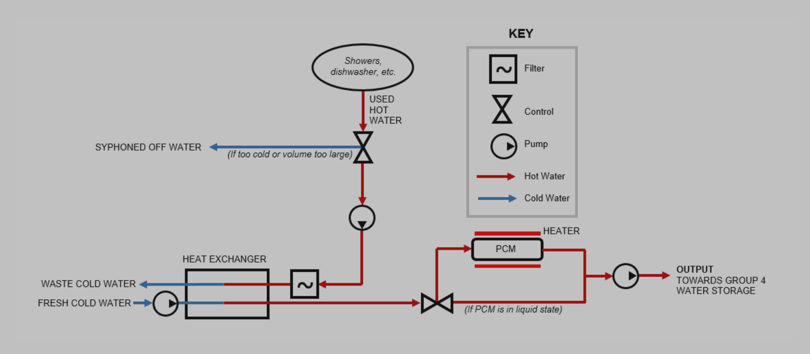
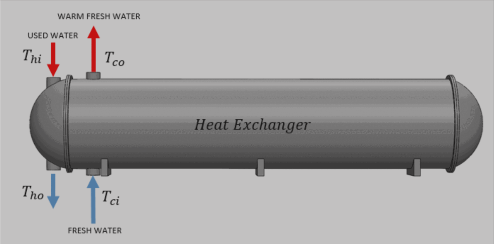

tinkering around
< |
Clean Heat
May 2021 | Posted April 2023 | University of Birmingham
Storing and re-using domestic water heat energy
The Climate Change Act 2008 committed the UK to reducing greenhouse gas emissions by at least 80% by 2050
We propose a combination system for domestic use to minimise heat loss in your water system. Our proposal comes in three parts: a highly efficient heat exchanger, a novel heat storage solution using Phase Change Material (PCM) and a control system to optimise and integrate with current domestic boilers.
System Schematic

High level schematic of heat exchanger and PCM system.
PCM Unit

Cross-section view of the PCM unit
Heat Exchanger Unit

(1) The heat exchanger unit. (2) Flow trajectories of cold and warm water (3) Temperature contours.
The Complete Report
This project was part of my undergraduate course at the University of Birmingham.